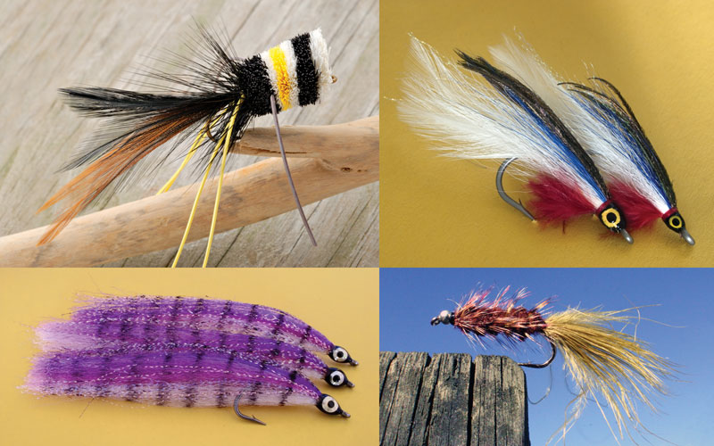
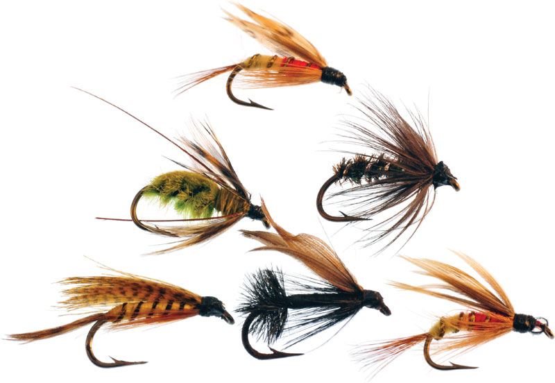
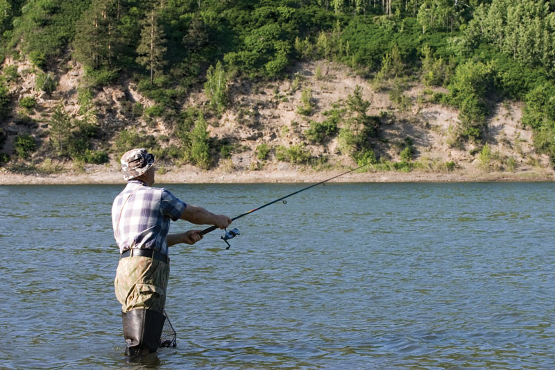
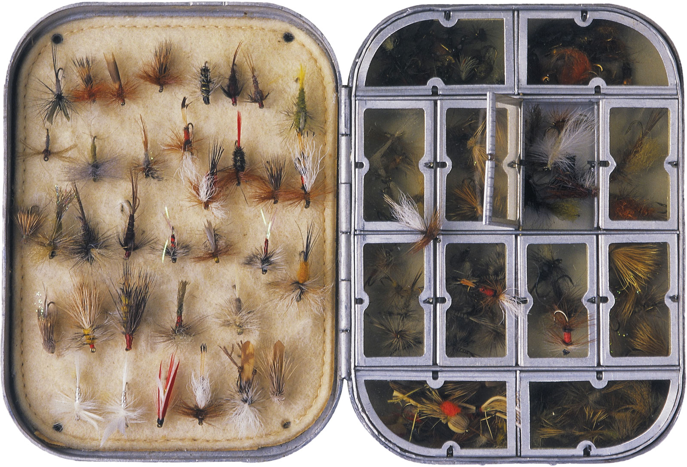

See Article History
Fly-fishing, method of angling employing a long rod, typically 7 to 11 feet (2 to 3.5 metres) in length, constructed of carbon fibre, fibreglass, or bamboo, and a simple arbor reel holding a heavy line joined to a lighter nylon leader. The rod is used to cast artificial flies made of hair, feathers, or synthetic materials designed to imitate the natural food sources of the fish. The fly angler snaps the long rod back and forth, allowing the heavier weight of the line to propel the nearly weightless fly forward. Fly-fishing is believed by its devotees to be the most challenging and fulfilling method of sport fishing. It has inspired a considerable body of technical as well as contemplative literature, the most by far of any angling. Read more...
   You can use that kind of aliments to make rod of fly-fishing.If would like you can use other aliments.But one think you remember that the steck will must be srong.
| Your first name | |
| Your last name | |
| Your email address | |